网络 IO，会涉及到两个系统对象，一个是用户空间调用IO的进程或者线程，另一个是内核空间的内核系统，比如发生 IO 操作 read 时，它会经历两个阶段：
- 等待数据准备就绪
- 将数据从内核拷贝到进程或者线程中。
因为在以上两个阶段上各有不同的情况，所以出现了多种网络 IO 模型 。本文主要介绍五种网络IO模型
阻塞IO(blocking io)
在 linux 中，默认情况下所有的 socket 都是 blocking，一个典型的读操作流程
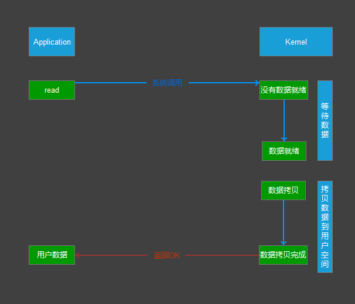
当用户进程调用了 read 这个系统调用，kernel 就开始了 IO 的第一个阶段：准备数据。对于 network io 来说，很多时候数据在一开始还没有到达（比如，还没有收到一个完整的数据包）， 这个时候 kernel 就要等待足够的数据到来。而在用户进程这边，整个进程会被阻塞。当 kernel 一直等到数据准备好了，它就会将数据从 kernel 中拷贝到用户内存，然后 kernel 返回结果， 用户进程才解除 block 的状态，重新运行起来。
所以，blocking IO 的特点就是在 IO 执行的两个阶段（等待数据和拷贝数据两个阶段）都被 block 了。
一般程序员接触到的网络编程都是从 listen()、send()、recv() 等接口开始的， 这些接口都是阻塞型的。使用这些接口可以很方便的构建服务器/客户机的模型。下面是一 个简单地“一问一答”的服务器。
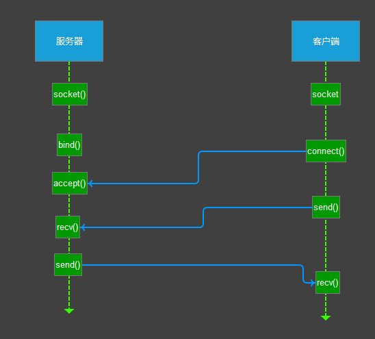
大部分的 socket 接口都是阻塞型的。所谓阻塞型接口是指系统调用（一般是 IO 接口） 不返回调用结果并让当前线程一直阻塞，只有当该系统调用获得结果或者超时出错时才返 回。 实际上，除非特别指定，几乎所有的 IO 接口 ( 包括 socket 接口 ) 都是阻塞型的。这给 网络编程带来了一个很大的问题，如在调用 send()的同时，线程将被阻塞，在此期间，线程 将无法执行任何运算或响应任何的网络请求。 一个简单的改进方案是在服务器端使用多线程（或多进程）。多线程（或多进程）的目的是让每个连接都拥有独立的线程（或进程），这样任何一个连接的阻塞都不会影响其他的连接。具体使用多进程还是多进程，并没有一个特定的模式。
多线程还是多进程的选择：
传统意义上，进程的开销要远远大于线程，所以如果需要同时为较多的客户机提供服务，则不推荐使用多进程；如果单个服务执行体需要消耗较多的CPU资源，譬如需要进行大规模或长时间的数据运算或文件访问， 则进程较为安全。通常，使用pthread_create ()创建新线程，fork()创建新进程。
我们让服务器同时为多个客户机提供一问一答的服务。于是有了如下的模型
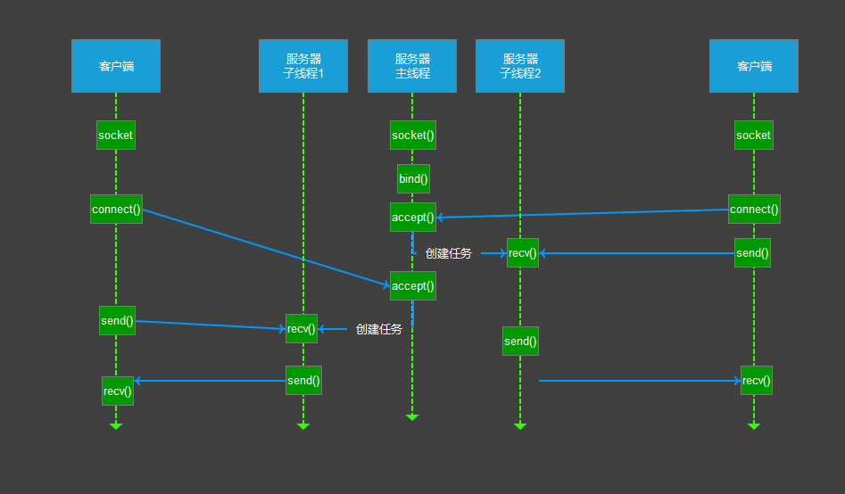
在上述的
线程/时间图例中，主线程持续等待客户端的连接请求，如果有连接，则创建新线程，并在新线程中提供为前例同样的问答服务。 很多初学者可能不明白为何一个 socket 可以 accept 多次。实际上 socket 的设计者 可能特意为多客户机的情况留下了伏笔，让 accept()能够返回一个新的 socket。下面是 accept 接口的原型：int accept(int s, struct sockaddr *addr, socklen_t *addrlen);
输入参数 s 是从socket()，bind()和listen()中沿用下来的 socket 句柄。执行完bind()和listen()后，操作系统已经开始在指定的端口处监听所有的连接请求，如果有请求，则将该连接请求加入请求队列。调用accept()接口正是从socket s的请求队列抽 取第一个连接信息，创建一个与s同类的新的socket返回句柄。新的socket句柄即是后 续read()和recv()的输入参数。如果请求队列当前没有请求，则accept()将进入阻塞 状态直到有请求进入队列。
上述多线程的服务器模型似乎完美的解决了为多个客户机提供问答服务的要求，但其实 并不尽然。如果要同时响应成百上千路的连接请求，则无论多线程还是多进程都会严重占据 系统资源，降低系统对外界响应效率，而线程与进程本身也更容易进入假死状态。
很多程序员可能会考虑使用“线程池”或“连接池”。“线程池”旨在减少创建和销毁线程的频率，其维持一定合理数量的线程，并让空闲的线程重新承担新的执行任务。“连接池”维持连接的缓存池，尽量重用已有的连接,减少创建和关闭连接的频率。这两种技术都可以很好的降低系统开销，都被广泛应用很多大型系统，如 websphere、tomcat 和各种数据库等。 但是，“线程池”和“连接池”技术也只是在一定程度上缓解了频繁调用 IO 接口带来的资源占用。而且，所谓“池”始终有其上限，当请求大大超过上限时，“池”构成的系统对外界的响应并不比没有池的时候效果好多少。所以使用“池”必须考虑其面临的响应规模，并根据响应规模调整“池”的大小。
对应上例中的所面临的可能同时出现的上千甚至上万次的客户端请求，“线程池”或“连接池”或许可以缓解部分压力，但是不能解决所有问题。总之，多线程模型可以方便高效的 解决小规模的服务请求，但面对大规模的服务请求，多线程模型也会遇到瓶颈，可以用非阻塞接口来尝试解决这个问题。
非阻塞 IO（non-blocking IO）
Linux 下，可以通过设置 socket 使其变为 non-blocking。当对一个 non-blocking socket 执行读 操作时，流程是这个样子:
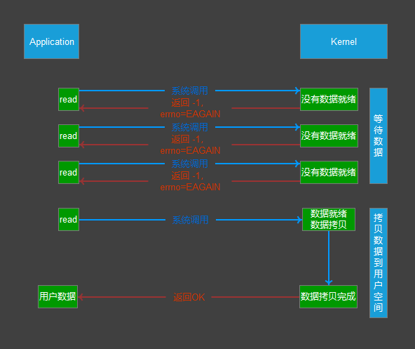
从图中可以看出，当用户进程发出 read 操作时，如果
kernel中的数据还没有准备好，那 么它并不会block用户进程，而是立刻返回一个error。从用户进程角度讲 ，它发起一个read操作后，并不需要等待，而是马上就得到了一个结果。用户进程判断结果是一个error时，它就知道数据还没有准备好，于是它可以再次发送read操作。一旦kernel中的数据 准备好了，并且又再次收到了用户进程的system call，那么它马上就将数据拷贝到了用 户内存，然后返回，所以，在非阻塞式 IO中，用户进程其实是需要不断的主动询问kernel数据准备好了没有。 在非阻塞状态下，recv()接口在被调用后立即返回，返回值代表了不同的含义。如在本例中，
- recv() 返回值大于 0，表示接受数据完毕，返回值即是接受到的字节数；
- recv() 返回 0，表示连接已经正常断开；
- recv() 返回 -1，且
errno等于EAGAIN，表示recv操作还没执行完成； - recv() 返回 -1，且
errno不等于EAGAIN，表示recv操作遇到系统错误errno。
非阻塞的接口相比于阻塞型接口的显著差异在于，在被调用之后立即返回。使用如下 的函数可以将某句柄 fd 设为非阻塞状态。fcntl( fd, F_SETFL, O_NONBLOCK );
下面将给出只用一个线程，但能够同时从多个连接中检测数据是否送达，并且接受数据的模型。
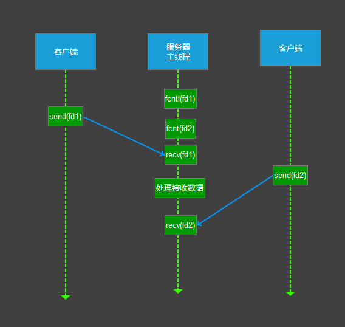
可以看到服务器线程可以通过循环调用
recv()接口，可以在单个线程内实现对所有连 接的数据接收工作。但是上述模型绝不被推荐。因为，循环调用recv()将大幅度推高 CPU 占用率；此外，在这个方案中recv()更多的是起到检测“操作是否完成”的作用，实际操作系统提供了更为高效的检测“操作是否完成“作用的接口，例如select()多路复用模式， 可以一次检测多个连接是否活跃。
综上两种方式，我们发现无论阻塞非阻塞，主线程与子线程都是一直占用着cpu的（空转，就算使用了sleep，也会定时唤醒线程）。对于高并发情景这绝不是一种合理的设计，我们期待一种更高效的由内核通知我们唤醒线程的方式，有数据读写时唤醒，无数据读写就保持挂起状态。
多路复用IO（IO multiplexing）
IO multiplexing 这个词可能有点陌生，但是提到 select/poll/epoll，大概就都能明白了。有些地方 也称这种 IO 方式为事件驱动 IO(event driven IO)。我们都知道，select/poll/epoll 的好处就在于单个 process 就可以同时处理多个网络连接的 IO。它的基本原理就是 select/poll/epoll 这个 function 会不断的轮询所负责的所有 socket，当某个 socket 有数据到达了，就通知用户进程。它的流程如图：
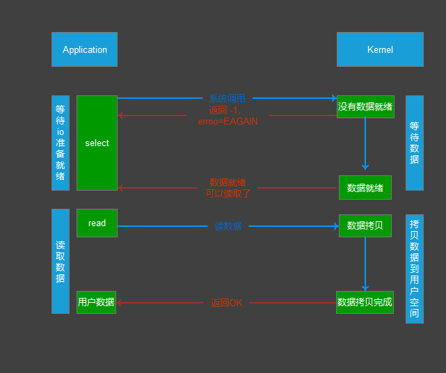
当用户进程调用了
select，那么整个进程会被block，而同时，kernel会“监视”所有select负责的socket，当任何一个socket中的数据准备好了，select就会返回。这个时候用户进程再调用read操作，将数据从kernel拷贝到用户进程。 这个图和blocking IO的图其实并没有太大的不同，事实上还更差一些。因为这里需要使用两个系统调用(select和read)，而blocking IO只调用了一个系统调用(read)。 但是使用select以后最大的优势是用户可以在一个线程内同时处理多个socket的IO 请求。用户可以注册多个socket，然后不断地调用select读取被激活的socket，即可达到 在同一个线程内同时处理多个IO请求的目的。而在同步阻塞模型中，必须通过多线程的方式才能达到这个目的。（多说一句：所以，如果处理的连接数不是很高的话，使用select/epoll的web server不一定比使用multi-threading+blocking IO的web server性能更好，可能延迟还更大。select/epoll的优势并不是对于单个连接能处理得更快，而是在于能处理更多的连接。）
在多路复用模型中，对于每一个socket，一般都设置成为non-blocking，但是，上图所示，整个用户的process其实是一直被block的。只不过process是被select这个函数block，而不是被socket IO给block。因此select()与非阻塞IO类似。
大部分 Unix/Linux 都支持 select 函数，该函数用于探测多个文件句柄的状态变化。 下面给出 select 接口的原型：
1 | FD_ZERO(int fd, fd_set* fds) |
这里，fd_set 类型可以简单的理解为按 bit 位标记句柄的队列，例如要在某 fd_set 中标记一个值为 16 的句柄，则该 fd_set 的第 16 个 bit 位被标记为 1。具体的置位、验证 可使用 FD_SET、FD_ISSET 等宏实现。在 select()函数中，readfds、writefds 和 exceptfds 同时作为输入参数和输出参数。如果输入的 readfds 标记了 16 号句柄，则 select()将检测 16 号句柄是否可读。在 select()返回后，可以通过检查 readfds 有否标 记 16 号句柄，来判断该“可读”事件是否发生。另外，用户可以设置 timeout 时间。 下面将重新模拟上例中从多个客户端接收数据的模型。
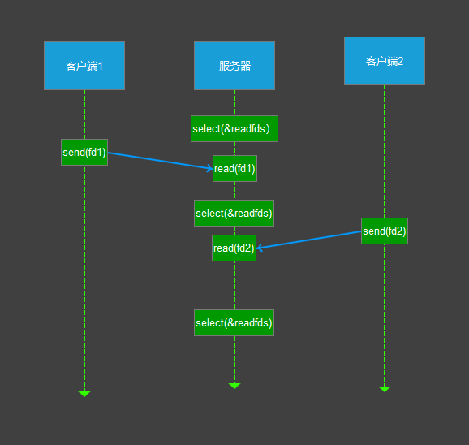
上述模型只是描述了使用
select()接口同时从多个客户端接收数据的过程；由于select()接口可以同时对多个句柄进行读状态、写状态和错误状态的探测，所以可以很容易构建为多个客户端提供独立问答服务的服务器系统。
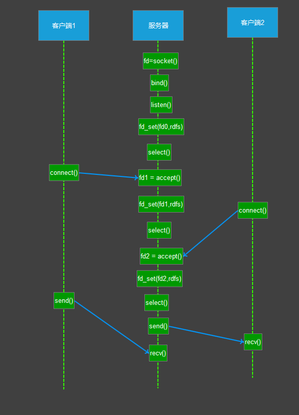
这里需要指出的是，客户端的一个
connect()操作，将在服务器端激发一个“可读事件”，所以select()也能探测来自客户端的connect()行为。
上述模型中，最关键的地方是如何动态维护 select()的三个参数 readfds、writefds 和 exceptfds。作为输入参数，readfds 应该标记所有的需要探测的“可读事件”的句柄， 其中永远包括那个探测 connect() 的那个“母”句柄；同时，writefds 和 exceptfds 应 该标记所有需要探测的“可写事件”和“错误事件”的句柄 ( 使用 FD_SET() 标记 )。 作为输出参数，readfds、writefds 和 exceptfds 中的保存了 select() 捕捉到的所有事件的句柄值。程序员需要检查的所有的标记位 ( 使用 FD_ISSET()检查 )，以确定到底哪些句柄发生了事件。
上述模型主要模拟的是“一问一答”的服务流程，所以如果 select()发现某句柄捕捉到了“可读事件”，服务器程序应及时做recv()操作，并根据接收到的数据准备好待发送数据， 并将对应的句柄值加入 writefds，准备下一次的“可写事件”的 select()探测。同样，如果 select()发现某句柄捕捉到“可写事件”，则程序应及时做 send()操作，并准备好下一 次的“可读事件”探测准备。
这种模型的特征在于每一个执行周期都会探测一次或一组事件，一个特定的事件会触发 某个特定的响应。我们可以将这种模型归类为“事件驱动模型”。
相比其他模型，使用 select() 的事件驱动模型只用单线程（进程）执行，占用资源少，不消耗太多 CPU，同时能够为多客户端提供服务。如果试图建立一个简单的事件驱动的服务器程序，这个模型有一定的参考价值。
但这个模型依旧有着很多问题。
- 首先
select()接口并不是实现“事件驱动”的最好选择。 因为当需要探测的句柄值较大时，select()接口本身需要消耗大量时间去轮询各个句柄。 很多操作系统提供了更为高效的接口，如linux提供了epoll，BSD提供了kqueue，Solaris提供了/dev/poll，…。如果需要实现更高效的服务器程序，类似 epoll 这样的接口更被推 荐。遗憾的是不同的操作系统特供的 epoll 接口有很大差异，所以使用类似于 epoll 的接 口实现具有较好跨平台能力的服务器会比较困难。 - 其次，该模型将事件探测和事件响应夹杂在一起，一旦事件响应的执行体庞大，则对整 个模型是灾难性的。如，庞大的执行体 1 将直接导致响应事件 2 的执行体迟迟得不到执行，并在很大程度上降低了事件探测的及时性。
幸运的是，有很多高效的事件驱动库可以屏蔽上述的困难，常见的事件驱动库有 libevent 库，还有作为 libevent 替代者的 libev 库。这些库会根据操作系统的特点选择 最合适的事件探测接口，并且加入了信号(signal) 等技术以支持异步响应，这使得这些库成为构建事件驱动模型的不二选择。下章将介绍如何使用 libev 库替换 select 或 epoll 接口，实现高效稳定的服务器模型。
实际上，Linux 内核从 2.6 开始，也引入了支持异步响应的 IO 操作，如 aio_read, aio_write，这就是异步IO。
异步IO（Asynchronous I/O）
Linux 下的 asynchronous IO 用在磁盘 IO 读写操作，不用于网络 IO，从内核 2.6 版本才开始引 入。先看一下它的流程
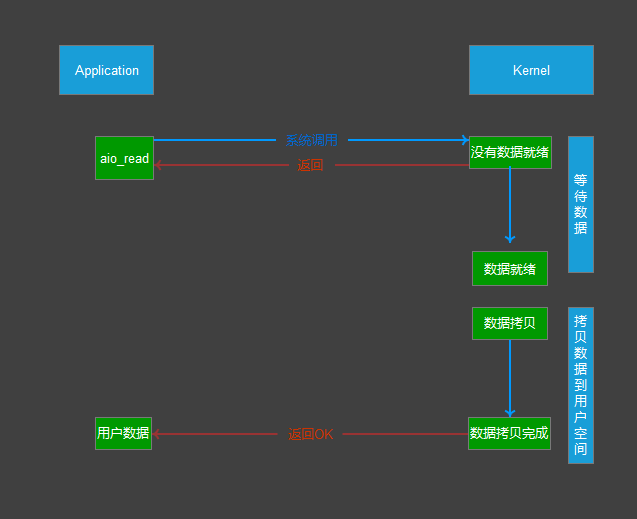
用户进程发起
read操作之后，立刻就可以开始去做其它的事。而另一方面，从kernel的角度，当它受到一个asynchronous read之后，首先它会立刻返回，所以不会对用户进程产生任何block。然后，kernel会等待数据准备完成，然后将数据拷贝到用户内存，当这一切都完成之后，kernel 会给用户进程发送一个signal，告诉它read操作完成了。
异步 IO 是真正非阻塞的，它不会对请求进程产生任何的阻塞，因此对高并发的网络服务器实现至关重要。
到目前为止，已经将四个 IO 模型都介绍完了。现在回过头来回答最初的两个问题： blocking 和 non-blocking 的区别在哪?synchronous IO 和 asynchronous IO 的区别在哪?
先回答最简单的这个：
blocking与non-blocking。前面的介绍中其实已经很明确的 说明了这两者的区别。调用blocking IO会一直block住对应的进程直到操作完成，而non-blocking IO在kernel还在准备数据的情况下会立刻返回。
两者的区别就在于synchronous IO做“IO operation”的时候会将process阻塞。 按照这个定义，之前所述的blocking IO，non-blocking IO，IO multiplexing都属于synchronous IO。有人可能会说，non-blocking IO并没有被block啊。这里有个非常 “狡猾”的地方，定义中所指的”IO operation”是指真实的 IO 操作，就是例子中的 read 这个系统调用。non-blocking IO在执行read这个系统调用的时候，如果kernel的数据没有准备好，这时候不会block进程。但是当kernel中数据准备好的时候，read会将数据 从kernel拷贝到用户内存中，这个时候进程是被block了，在这段时间内进程是被block的。而asynchronous IO则不一样，当进程发起 IO 操作之后，就直接返回再也不理睬了， 直到kernel发送一个信号，告诉进程说IO完成。在这整个过程中，进程完全没有被block。
信号驱动IO（signal driven I/O， SIGIO）
首先我们允许套接口进行信号驱动 I/O,并安装一个信号处理函数，进程继续运行并不阻 塞。当数据准备好时，进程会收到一个 SIGIO 信号，可以在信号处理函数中调用 I/O 操作函 数处理数据。当数据报准备好读取时，内核就为该进程产生一个 SIGIO 信号。我们随后既可 以在信号处理函数中调用 read 读取数据报，并通知主循环数据已准备好待处理，也可以立 即通知主循环，让它来读取数据报。无论如何处理 SIGIO 信号，这种模型的优势在于等待数 据报到达(第一阶段)期间，进程可以继续执行，不被阻塞。免去了 select 的阻塞与轮询，当 有活跃套接字时，由注册的 handler 处理。
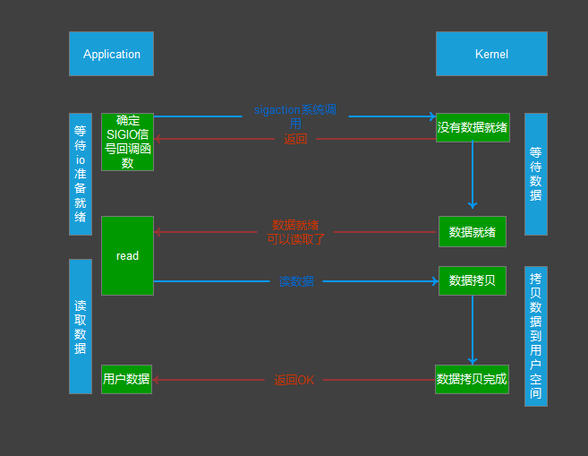
经过上面的介绍，会发现
non-blocking IO和asynchronous IO的区别还是很明显的。在non-blocking IO中，虽然进程大部分时间都不会被block，但是它仍然要求进程去主动的check，并且当数据准备完成以后，也需要进程主动的再次调用recvfrom来将数据拷贝到用户内存。而asynchronous IO则完全不同。它就像是用户进程将整个IO操作交给了他人（kernel）完 成，然后他人做完后发信号通知。在此期间，用户进程不需要去检查 IO 操作的状态，也不需要主动的去拷贝数据.
服务器模型 Reactor 与 Proactor
对高并发编程，网络连接上的消息处理，可以分为两个阶段：等待消息准备、消息处理。当使用默认的阻塞套接字时（例如上面提到的 1 个线程捆绑处理 1 个连接），往往是把 这两个阶段合而为一，这样操作套接字的代码所在的线程就得睡眠来等待消息准备好，这导致了高并发下线程会频繁的睡眠、唤醒，从而影响了 CPU 的使用效率。
高并发编程方法当然就是把两个阶段分开处理。即，等待消息准备好的代码段，与处理消息的代码段是分离的。当然，这也要求套接字必须是非阻塞的，否则，处理消息的代码段 很容易导致条件不满足时，所在线程又进入了睡眠等待阶段。那么问题来了，等待消息准备好这个阶段怎么实现？它毕竟还是等待，这意味着线程还是要睡眠的！解决办法就是，线程主动查询，或者让 1 个线程为所有连接而等待！这就是 IO 多路复用了。多路复用就是处理 等待消息准备好这件事的，但它可以同时处理多个连接！它也可能“等待”，所以它也会导致 线程睡眠，然而这不要紧，因为它一对多、它可以监控所有连接。这样，当我们的线程被唤醒执行时，就一定是有一些连接准备好被我们的代码执行了。
作为一个高性能服务器程序通常需要考虑处理三类事件： I/O 事件，定时事件及信号。 下面介绍两种高效的事件处理模型：Reactor 和 Proactor。
Reactor 模型
首先来回想一下普通函数调用的机制：程序调用某函数，函数执行，程序等待，函数将 结果和控制权返回给程序，程序继续处理。Reactor 释义“反应堆”，是一种事件驱动机制。 和普通函数调用的不同之处在于：应用程序不是主动的调用某个 API 完成处理，而是恰恰相反，Reactor 逆置了事件处理流程，应用程序需要提供相应的接口并注册到 Reactor 上， 如果相应的时间发生，Reactor 将主动调用应用程序注册的接口，这些接口又称为“回调函数”。
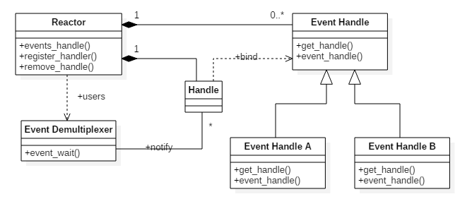
Reactor 模型有三个重要的组件：
- 多路复用器：由操作系统提供，在 linux 上一般是 select, poll, epoll 等系统调用。
- 事件分发器：将多路复用器中返回的就绪事件分到对应的处理函数中。
- 事件处理器：负责处理特定事件的处理函数。
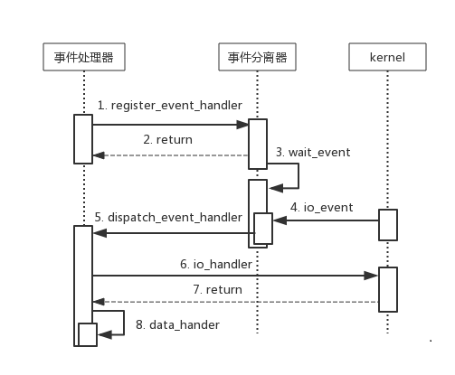
具体流程如下：
- 注册读就绪事件和相应的事件处理器；
- 事件分离器等待事件；
- 事件到来，激活分离器，分离器调用事件对应的处理器；
- 事件处理器完成实际的读操作，处理读到的数据，注册新的事件，然后返还控制权。
Reactor 模式是编写高性能网络服务器的必备技术之一，它具有如下的优点：
- 响应快，不必为单个同步时间所阻塞，虽然 Reactor 本身依然是同步的；
- 编程相对简单，可以最大程度的避免复杂的多线程及同步问题，并且避免了多线程/进 程的切换开销；
- 可扩展性，可以方便的通过增加 Reactor 实例个数来充分利用 CPU 资源；
- 可复用性，reactor 框架本身与具体事件处理逻辑无关，具有很高的复用性；
Reactor 模型开发效率上比起直接使用 IO 复用要高，它通常是单线程的，设计目标是希望单线程使用一颗 CPU 的全部资源，但也有附带优点，即每个事件处理中很多时候可以不考虑共享资源的互斥访问。可是缺点也是明显的，现在的硬件发展，已经不再遵循摩尔定律，CPU 的频率受制于材料的限制不再有大的提升，而改为是从核数的增加上提升能力，当程序需要使用多核资源时，Reactor 模型就会悲剧, 为什么呢？
如果程序业务很简单，例如只是简单的访问一些提供了并发访问的服务，就可以直接开启多个反应堆，每个反应堆对应一颗 CPU 核心，这些反应堆上跑的请求互不相关，这是完全可以利用多核的。例如: Nginx 这样的 http 静态服务器。
Proactor 模型
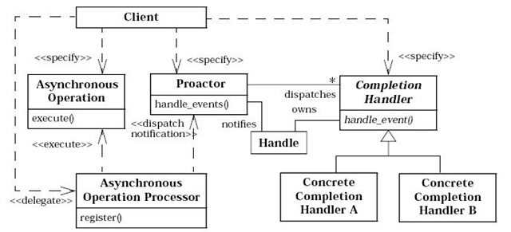
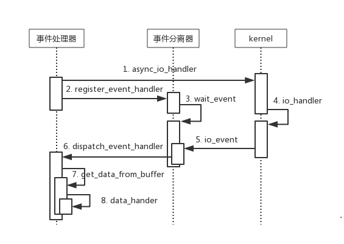
Proactor译作“前摄器模式”是设计模式中重要的一种，具体流程如下：
- 处理器发起异步操作，并关注 I/O 完成事件
- 事件分离器等待操作完成事件
- 分离器等待过程中，内核并行执行实际的 I/O 操作，并将结果数据存入用户自定义缓冲区，最后通知事件分离器读操作完成
- I/O 完成后，通过事件分离器呼唤处理器
- 事件处理器处理用户自定义缓冲区中的数据
从上面的处理流程，我们可以发现 proactor 模型最大的特点就是使用异步 I/O。所有的 I/O 操作都交由系统提供的异步 I/O 接口去执行。工作线程仅仅负责业务逻辑。在 Proactor 中，用户函数启动一个异步的文件操作。同时将这个操作注册到多路复用器上。多路复用器并不关心文件是否可读或可写而是关心这个异步读操作是否完成。异步操作是操作系统完成，用户程序不需要关心。多路复用器等待直到有完成通知到来。当操 作系统完成了读文件操作——将读到的数据复制到了用户先前提供的缓冲区之后，通知多路复用器相关操作已完成。多路复用器再调用相应的处理程序，处理数据。
Proactor增加了编程的复杂度，但给工作线程带来了更高的效率。Proactor可以在 系统态将读写优化，利用 I/O 并行能力，提供一个高性能单线程模型。在windows上， 由于没有epoll这样的机制，因此提供了IOCP来支持高并发， 由于操作系统做了较好的优化，windows较常采用Proactor的模型利用完成端口来实现服务器。在linux上，在 2.6 内核出现了aio接口，但aio实际效果并不理想，它的出现，主要是解决poll性能不佳的问题，但实际上经过测试，epoll的性能高于poll+aio，并且aio不能处理accept， 因此 linux 主要还是以Reactor模型为主。
在不使用操作系统提供的异步 I/O 接口的情况下，还可以使用 Reactor 来模拟 Proactor， 差别是：使用异步接口可以利用系统提供的读写并行能力，而在模拟的情况下，这需要在用户态实现。具体的做法如下：
- 注册读事件（同时再提供一段缓冲区）
- 事件分离器等待可读事件
- 事件到来，激活分离器，分离器（立即读数据，写缓冲区）调用事件处理器
- 事件处理器处理数据，删除事件(需要再用异步接口注册)
我们知道，Boost.asio 库采用的即为 Proactor 模型。不过 Boost.asio 库在 Linux 平台采用 epoll 实现的 Reactor 来模拟 Proactor，并且另外开了一个线程来完成读写调度。
同步 I/O 模拟 Proactor 模型
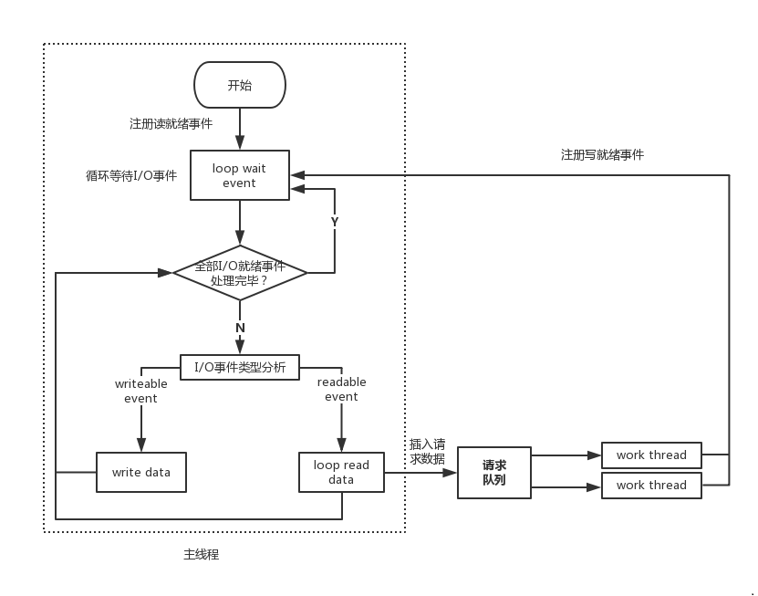
- 主线程往 epoll 内核事件表中注册 socket 上的读就绪事件。
- 主线程调用 epoll_wait 等待 socket 上有数据可读。
- 当 socket 上有数据可读时，epoll_wait 通知主线程。主线程从 socket 循环读取数据， 直到没有更多数据可读，然后将读取到的数据封装成一个请求对象并插入请求队列。
- 睡眠在请求队列上的某个工作线程被唤醒，它获得请求对象并处理客户请求，然后 往 epoll 内核事件表中注册 socket 上的写就绪事件。
- 主线程调用 epoll_wait 等待 socket 可写。
- 当 socket 可写时，epoll_wait 通知主线程。主线程往 socket 上写入服务器处理客户 请求的结果。
两个模式的相同点，都是对某个 IO 事件的事件通知(即告诉某个模块，这个 IO 操作可以进行或已经完成)。在结构上两者也有相同点：demultiplexor 负责提交 IO 操作(异步)、 查询设备是否可操作(同步)，然后当条件满足时，就回调注册处理函数。
不同点在于，异步情况下(Proactor)，当回调注册的处理函数时，表示 IO 操作已经完成；同步情况下(Reactor)，回调注册的处理函数时，表示 IO 设备可以进行某个操作(can read or can write)，注册的处理函数这个时候开始提交操作。
本文参考链接
本文reactor/proactor盗图自xieshuang-异步网络模型